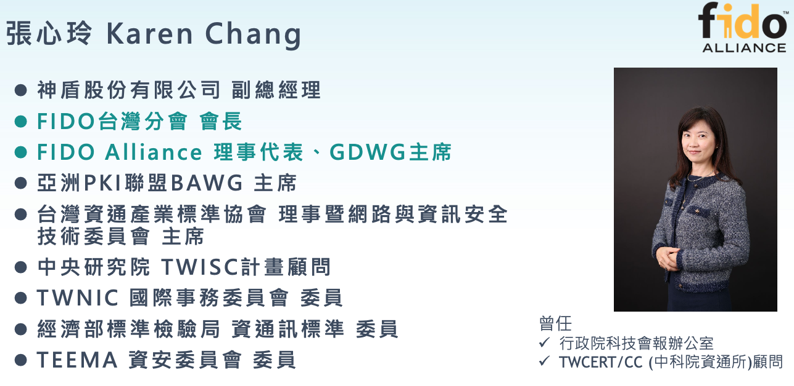

修正日期： 民國 112 年 09 月 07 日（母規範現行版：民國 113 年 07 月 18 日）
一、 為協助保險業使用網路身分驗證時，可建立有效的安全驗證機制，以確保減少身分冒用及詐騙情事發生，降低保戶與各公司之機敏資料外洩之風險，特訂定本作業準則。
- 立法目的說明。
二、 用詞定義及說明：
(一) 網路身分驗證：係指於網路應用系統通過特定的身分驗證機制，以確認是否為客戶本人。
(二) 多因子驗證（Multi-Factor Authentication,MFA）：係指為強化帳號密碼管理，降低系統相關帳號密碼遭假冒或竊用之風險，提高系統整體安全性並使用二種以上因子驗證方式。
- 名詞解釋
- 常見謬誤：密碼＋回答國小校名，這類不屬於多因子驗證。
多因子驗證（Multi-Factor Authentication,MFA）的因子（Factors）係指：
- 你知道什麼 Someting You know：意識（秘密），常見有身分證字號、出生年月日、自訂帳號、Password、過往記憶、圖形鎖、手勢
- 你有什麼 Someting You Have：物品，常見有ID Card（識別證）、手機、USB、密碼產生器、密碼卡、晶片卡、電腦、行動裝置、憑證載具。
- 你是什麼 Someting You Are：身體特徵，常見有面相（人臉辨識）、指紋、掌紋、虹膜、視網膜、聲音、簽字（筆跡）
三、 各會員公司電子商務系統辦理採用與用戶約定之靜態密碼方式進行身分驗證，相關規則如下:
(一) 應至少8位數。
(二) 應採英數字混合使用，且宜包含大小寫英文字母或符號。
(三) 不得使用客戶之統一編號及身分證字號等顯性資料作為密碼。
(四) 不應訂為相同的英數字、連續英文字或連號數字，預設密碼不在此限。
(五) 密碼與代號/帳號不應相同。
(六) 密碼連續錯誤達五次，各公司應做妥善處理。
(七) 變更密碼不得與前一次相同。
(八) 首次登入時，應強制變更預設密碼。
(九) 密碼超過一年未變更，各公司應妥善提醒客戶密碼變更事宜。
(十) 應採用下列一項密碼儲存管控機制：
1. 密碼於儲存時應先進行不可逆運算（如雜湊演算法），雜湊值應進行加密保護或加入不可得知的資料運算。
2. 採用加密演算法者，其金鑰應儲存於軟體式金鑰管理器並與原資料庫區隔，或搭配經第三方認證（如 FIPS 140-2 Level 3 以上）之硬體安全模組並限制明文匯出功能等。
- 用戶端靜態密碼，應至少8位數以上，採英數字混合使用，且宜包含大小寫英文字母或符號
- 要過濾客戶代號、帳號或其統一編號及身分證字號等顯性資料或相同的英數字、連續英文字或連號數字，作為密碼。
- 變更密碼不得與前一次相同或；密碼連續錯誤達五次，應有告警、密碼鎖定、KYC等因應措施。
- 密碼超過一年未變更，應適時提醒，常見是有提醒頁面。
密碼儲存管控機制
- 密碼應先進行不可逆運算（如雜湊演算法），雜湊值應進行加密（不可得知的資料運算）保護。
- 金鑰應儲存於軟體式金鑰管理器並與原資料庫區隔，或經第三方認證之硬體安全模組（HSM）並限制明文匯出功能。
四、 各會員公司電子商務系統辦理採用與用戶約定之一次性密碼(One Time Password)方式進行身分驗證，相關規則如下:
(一) 應至少6位數。
(二) 密碼與帳號不應相同。
(三) 輸入密碼連續錯誤達五次，該密碼即失效。
(四) 每次密碼有效性不得逾5分鐘，逾時即需重新申請發給新密碼。
- 設計OTP密碼時，應至少6位數，不得與帳號相同；輸入密碼連續錯誤達五次，該密碼即失效且每次密碼有效性不得逾5分鐘，逾期或失效，應重新申請發給新密碼。
五、 各會員公司提供消費者或保戶辦理身分驗證作業，得依主管機關核准或與保戶線上約定之身分驗證程序或數位憑證辦理；有關主管機關核准之第三方認證方式如下:
(一) 內政部核發之自然人憑證與行動自然人憑證。
(二) 金融機構核發之金融憑證。
(三) 金融行動身分識別聯盟之「金融機構辦理快速身分識別機制」(金融FIDO) 。
(四) Mobile ID 行動身分識別服務應由提供手機門號之電信業者進行身分驗證。
(五) 除第一款至第四款規定之認證方式外，於其他法令或相關函釋另有規定者，從其規定。
- 使用Something You Have（信物）的身份驗證，僅可使用：自然人憑證、金融憑證、金融FIDO、Mobile ID。
六、 各會員公司電子商務應用系統得依風險考量採用多因子驗證，其安全設計具有下列三項之任兩項以上技術，其說明如下：
(一) 用戶與保險業所約定之資訊，且無第三人知悉（如密碼、圖形鎖、手勢等）。
(二) 用戶所持有之設備，保險業應確認該設備為用戶與保險業所約定持有之實體設備（如密碼產生器、密碼卡、晶片卡、電腦、行動裝置、憑證載具等）。
(三) 用戶提供給保險業其所擁有之生物特徵（如指紋、臉部、虹膜、聲音、掌紋、靜脈、簽名等），保險業應直接或間接驗證該生物特徵。間接驗證係指由用戶端設備（如行動裝置）驗證或委由第三方驗證，僅讀取驗證結果，必要時應增加驗證來源辨識。
- 多因子認證，至少要三項之任兩項：
- 你知道什麼 Someting You know：意識（秘密），常見有身分證字號、出生年月日、自訂帳號、Password、過往記憶、圖形鎖、手勢。
- 你有什麼 Someting You Have：物品，常見有ID Card（識別證）、手機、USB、密碼產生器、密碼卡、晶片卡、電腦、行動裝置、憑證載具。
- 你是什麼 Someting You Are：身體特徵，常見有面相（人臉辨識）、指紋、掌紋、虹膜、視網膜、聲音、簽字（筆跡）
七、 各會員公司電子商務應用系統得採用國際組織FIDO聯盟之身分驗證機制。
- 國際組織FIDO聯盟
- 如果在台灣，可洽FIDO台灣分會會長-張心玲Karen

八、 會員公司辦理網路身分驗證，則系統或環境存取需建立身分驗證控管機制，相關規則如下：
(一) 建立身份驗證機制應防範自動化程式之登入或密碼更換嘗試。
(二) 當進行密碼重設機制(如忘記密碼)時，應針對使用者重新身分確認，並發送一次性及具有時效性符記。
(三) 供應商或合作廠商之網路身分驗證，應依合作性質建立適當控管機制，如限制登入IP及加強進行登入身分核實。
- 應防止自動化登入，常見使用圖形驗證
- 進行密碼重設機制(如忘記密碼)時，應針對使用者重新身分確認，並發送一次性及具有時效性符記。
- 供應商或合作廠商之網路身分驗證，常見是限制登入IP。
九、 會員公司當運用網路身分驗證時，應符合各會員公司所訂定之情境下採用適當身分驗證，相關說明如下：
(一) 當進行網路投保及網路保險服務時，應符合保險業辦理電子商務應注意事項規範之規定辦理網路投保業務需進行身分驗證作業。
(二) 當進行保全/理賠聯盟鏈契約變更及理賠申請時，應符合保全/理賠聯盟鏈業務應遵循事項規範推播通知業務進行註冊及身分驗證作業，同時也應符合保險業辦理電子商務應注意事項之網路保險服務之身分驗證作業之規範以及所屬可執行事項。
- 公司辦理網路投保及網路保險服務時，應符合保險業辦理電子商務應注意事項規範
- 當進行保全/理賠聯盟鏈契約變更及理賠申請時，除應符合保險業辦理電子商務應注意事項規範，同時亦應符合保險業辦理「保全／理賠聯盟鏈」業務應遵循事項規範之要求。